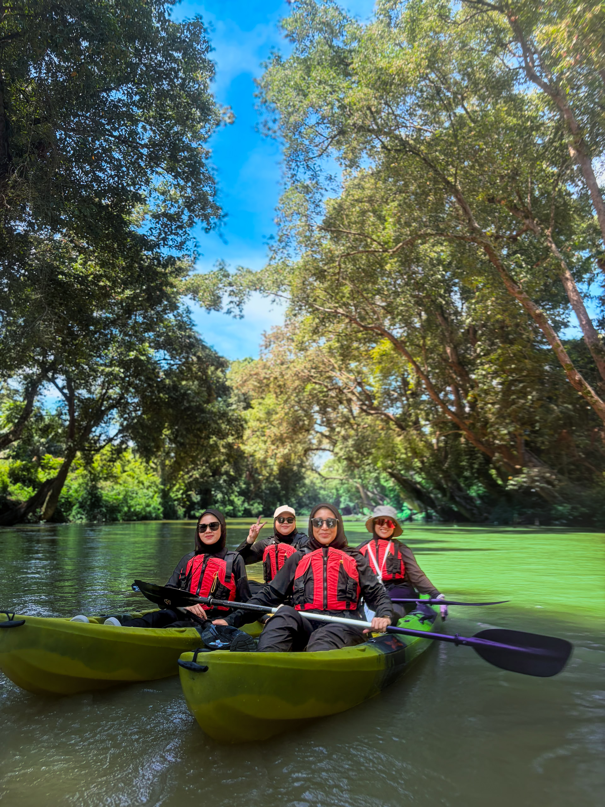

01 — Sungai Berang
Hanyut dalam ketenangan Little Amazon.
Di bawah teduhan Pokok Keruing Neram, Little Amazon mengalir dalam rentaknya yang tersendiri. Sungai ini membentuk sebuah landskap hidup yang menghubungkan hutan, hidupan liar dan komuniti di sekitarnya. Setiap kayuhan memberi ruang untuk menghargai keseimbangan ekosistem sungai serta memahami bahawa usaha konservasi bermula dengan rasa hormat terhadap alam. Dengan pengurusan risiko yang teliti dan panduan daripada jurupandu berpengalaman, setiap perjalanan berlangsung dalam suasana yang selamat dan bertanggungjawab.
Lihat pengalaman